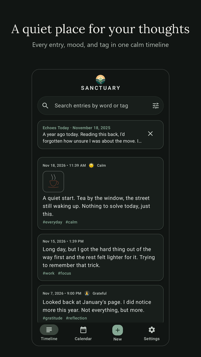
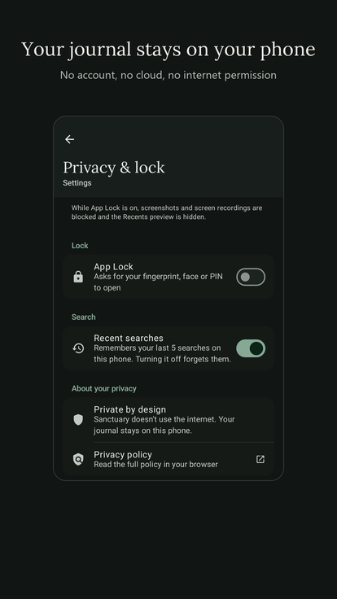
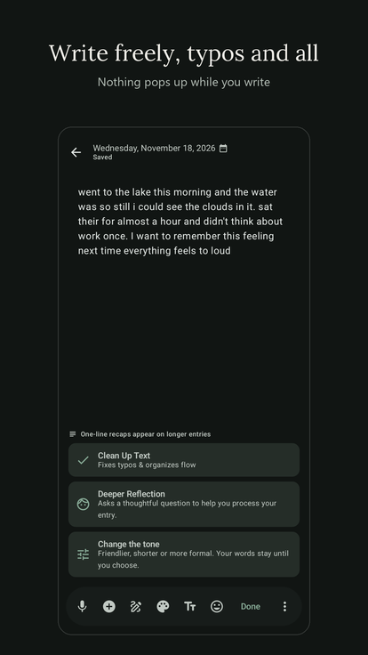
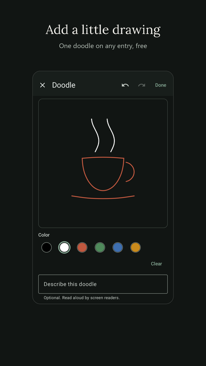
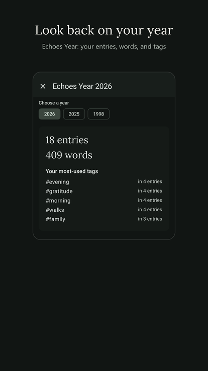
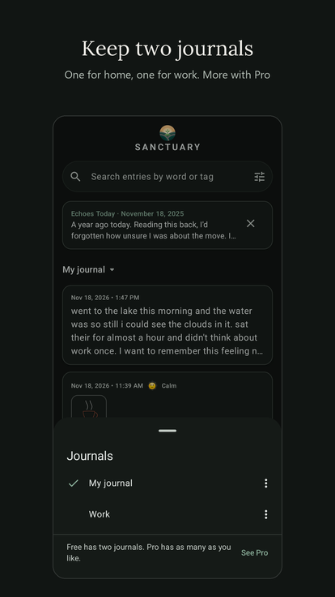

Sanctuary: Private Journal
A private, offline journal. Your words stay on your phone, encrypted.






Private by design
- Your entries and photos are kept encrypted on your device.
- Lock your journal with your fingerprint, face, or screen lock.
- Export a copy of your journal, photos included, whenever you like. You decide where it goes.
A calm place to write
- A distraction-free editor. Nothing pops up while you write.
- Keep two journals, say one for home and one for work.
- A Timeline, tags, keyword search, and a Calendar of the days you wrote.
- Photos, fonts, and soft card colors to make each entry yours.
- Add a small doodle to any entry, drawn with your finger.
- Write a letter to your future self and seal it until the day you choose.
- "On this day" gently brings back what you wrote before.
- Echoes Year, from the Calendar, looks back on a whole year: the entries, the words, the tags you used most.
- On tablets and foldables, your Timeline and an entry sit side by side.
- Available in English, Deutsch, Español, Français, Italiano, 日本語, 한국어, and Português (Brasil).
Gentle help, only when you ask
Clean Up Text fixes typos and flow while keeping your own voice, and a one-line recap sums up a longer entry. These run on Gemini Nano, Google's on-device AI, locally on your phone. Sanctuary never sends your words anywhere. They need a supported device, such as recent Pixel phones; everywhere else, Sanctuary works fully as a journal. A switch in Settings turns them all off.
Sanctuary Pro
Everything above is free. Pro is a single one-time purchase, not a subscription, and adds as many journals as you like, each with its own color, icon, font, reminder, and lock. It also adds unlimited photos, more themes and fonts, keepsake exports, encrypted backups, and search by meaning. Payments are handled by Google Play; Sanctuary never sees your payment details.
Support
Questions or feedback? Email legacybusiness25@gmail.com.